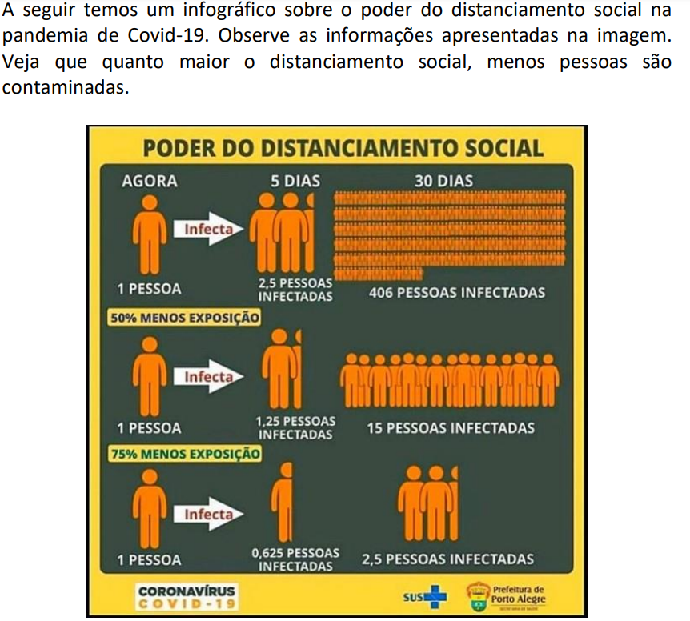
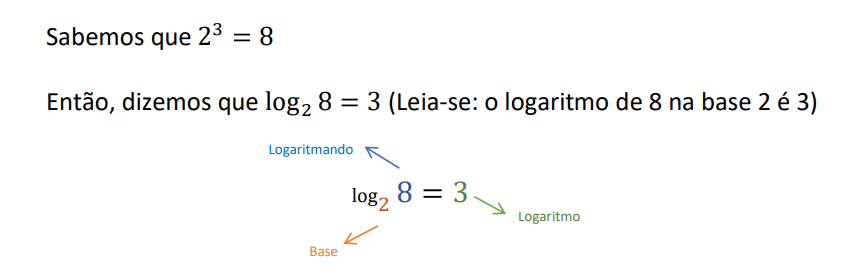

O conteúdo das funções Afim eu entendia quando a professora falava, e quando passava as atividades eu tinha e ainda tenho um pouco de problema de compreender as questões, e na prova eu tive dificuldades também, pois não lembrava muito como resolver, mas no demais eu fui bem com esse conteúdo.
A questão da função constante eu não lembrava, vi os PDF's da professora agora e não sei como resolver se me pedissem para fazer.
A parte das funções quadráticas eu poderia dizer o mesmo, tive bastante dificuldade na prova também, por falta de compreensão das questões e etc. A parte das parábulas eu entendi bem, não sabia ou pelo menos nem lembrava da palavra "parábula", e achei fácil essa parte.
A fórmula de bhaskara eu confesso ter um pouco de dificuldade para lembrar, não sabendo o porquê, pois eu era MUITO bom com bhaskara, e parece que desaprendi a usar.
Aparte de funções exponenciais eu entendi os exemplos que a professora passou, por exemplo este:
(Foto retirada do seu PDF)
Enfim, essa parte de exponencial foi a função que eu mais entendi. Por mais que eu tenha dificuldades para compreender o que a pergunta diz. Também pode ser pela questão de que são muitas fórmulas para decorar, mas isso eu acho que isso não iria interferir nuito nessa parte.
Vamos para a última e "pior parte". Logaritmos eu tinha entendido de início, com a foto abaixo, por exemplo:
(Foto retirada do seu PDF)
Eu fui entendendo, até que uma hora eu não entendia mais nada. A professora deu exercícios na última aula, no final da aula, e eu não consegui resolver apartir da Núm. 1 letra B. Eu esqueci tudo que a professora falou, e eu presto atenção na aula, então não sei o que me deu :/
Desculpa não ter muito conteúdo professora, tá muito apertado essa semana e eu deixei um pouco pro final do trimestre. Não pro final, mas quase no final :(
Voltar